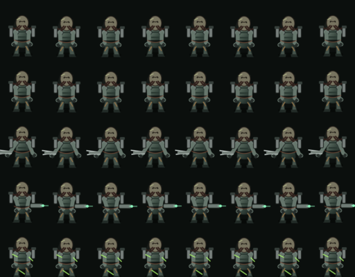
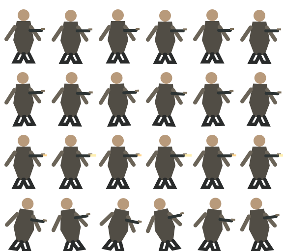
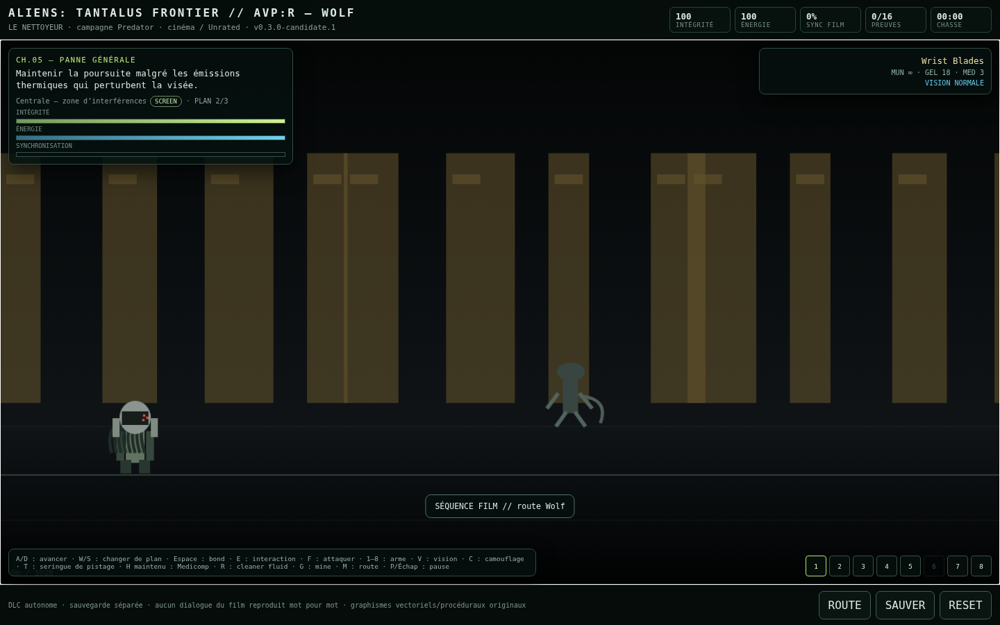
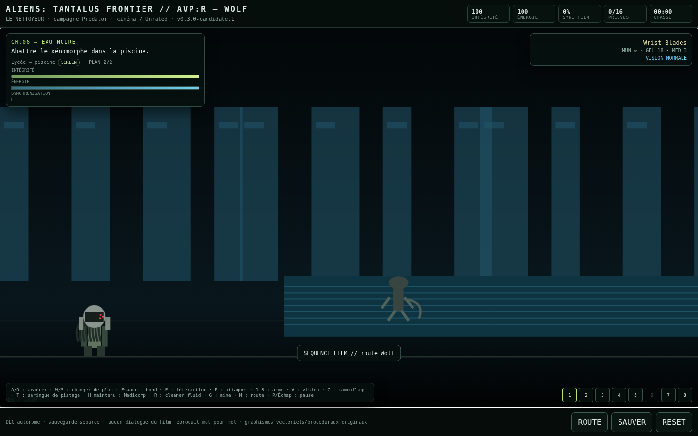
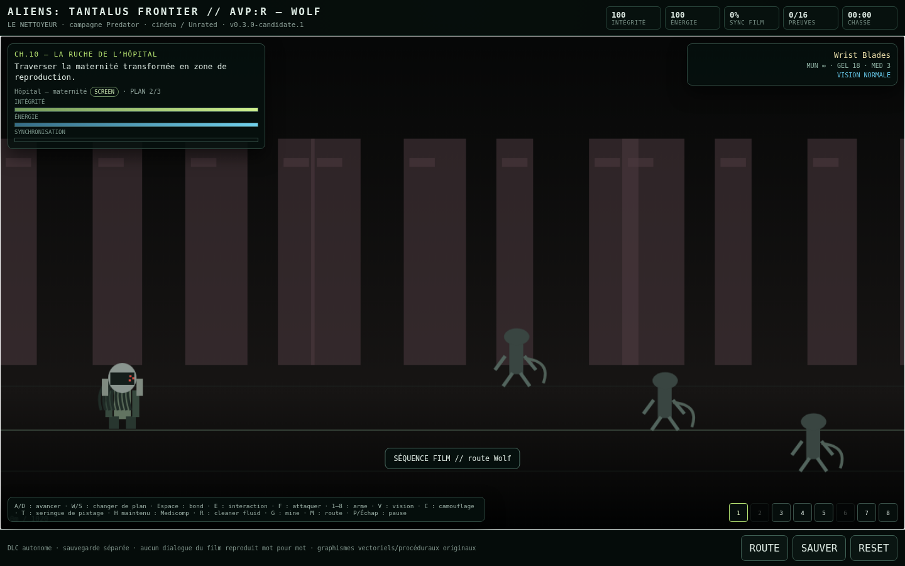

AVP:R — WOLF v0.7.0-candidate.1
TRANSPARENCE QA
Pas de nouvelle capture Chromium certifiée
Chromium 144 bloque dans cet environnement sur DBus/zygote avant la production d'une capture. Les images ci-dessous sont donc soit des planches d'assets actuelles, soit des captures navigateur historiques v0.3 explicitement identifiées. Aucune capture ancienne n'est présentée comme preuve du rendu v0.7.
Assets actuels du runtime


Historique navigateur — v0.3 uniquement
Ces huit captures servent à vérifier la continuité générale des scènes, pas le rendu des nouveaux systèmes v0.7.







Passes v0.7 vérifiées par tests
- HUD chaîne/rang/trauma.
- Flanking Xénomorphe multi-plans.
- Mémoire d'alerte après rupture du cloak.
- Charge et dard caudal télégraphiés sur le Predalien.
- Débrief de chapitre.
- Correction hospitalière : trois Xénomorphes dans la première mêlée au total.